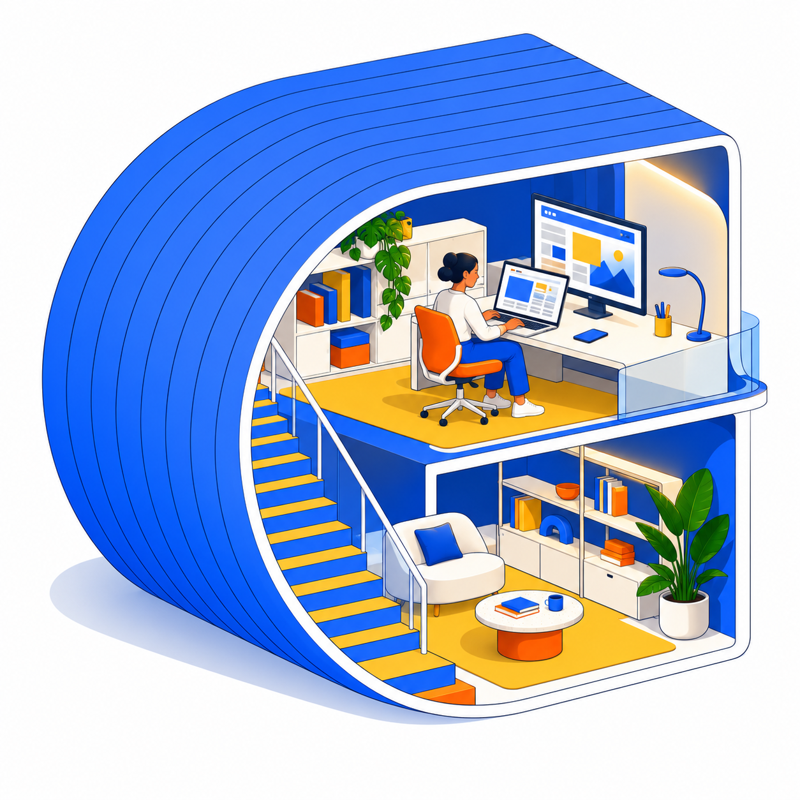

Build or refresh
Start a simple new site or improve the one you already have.
AI WEBSITE-BUILDING COACHING
We’ll build or improve your business website together, then I’ll teach you how to make everyday updates and keep moving with AI—without waiting on a developer for every small change.

FOR SMALL BUSINESSES & INDEPENDENT OWNERS
Maybe the site needs a refresh. Maybe you want to add a service, update a page, or finally fix the thing you’ve been meaning to change. We’ll work on the real site and use AI to help you learn the process.
I’ll show you how to make common changes, keep your content current, and recognize when a task needs deeper technical help. You build confidence and keep control of your website.
WE CAN WORK ON
We’ll choose a useful scope based on your current site and what you want to do next.
Start a simple new site or improve the one you already have.
Practice updating copy, images, pages, services, and basic site content with AI.
Learn a repeatable workflow and when a job deserves specialist support.
KEEP YOUR WEBSITE MOVING
Request a first-session time to improve your website, then learn to make everyday changes yourself.